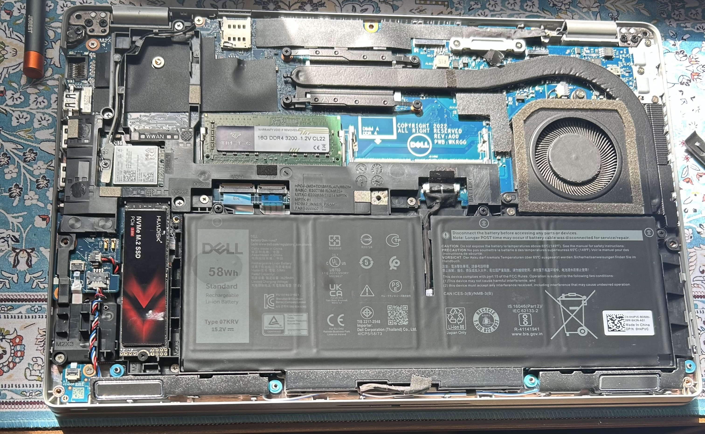
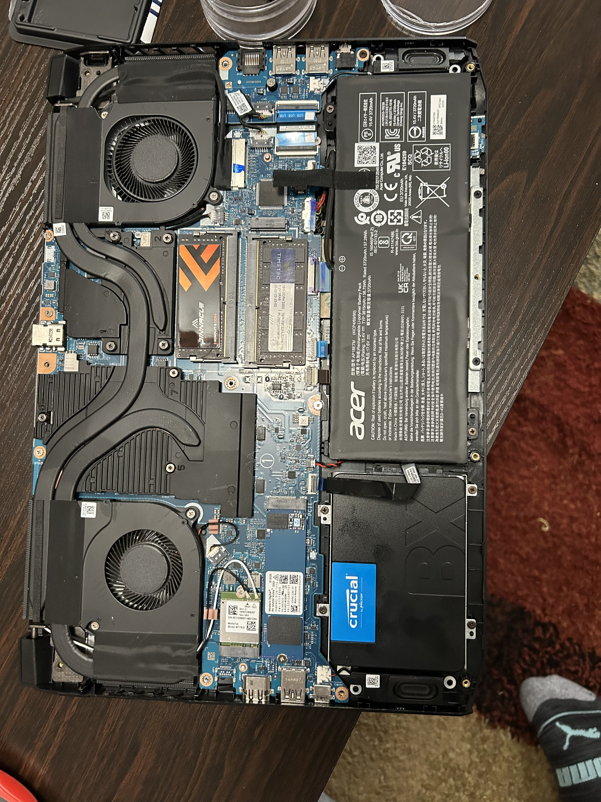
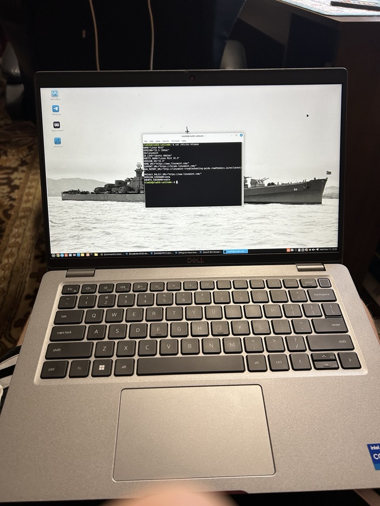
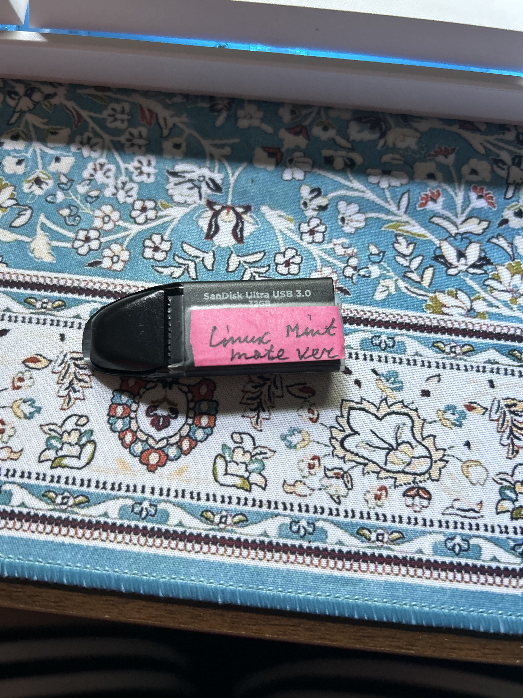
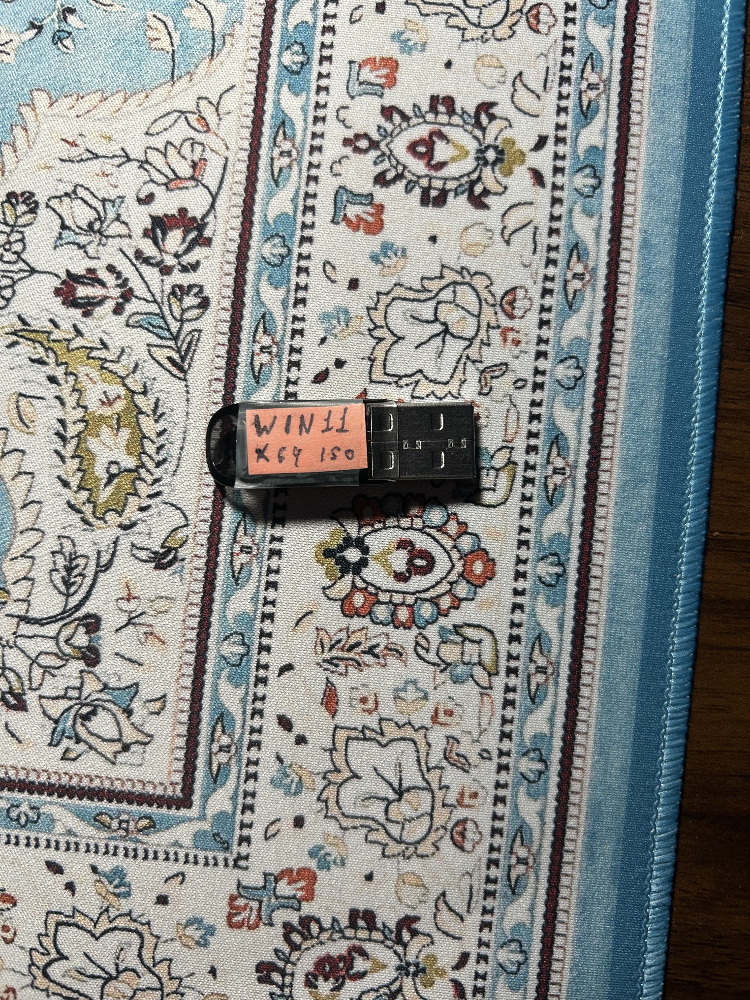
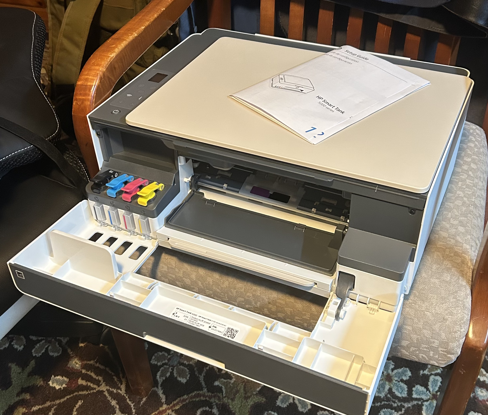

01. Project Overview
This case study documents practical experience with computer hardware maintenance, upgrades, refurbishment and peripheral deployment. The work combines physical hardware tasks with operating system installation, configuration and troubleshooting.
Activities include upgrading and restoring multiple laptop models, refurbishing desktop systems, installing Windows and Linux operating systems, and configuring an HP Smart Tank 5000 wireless printer.
02. Laptop Hardware Upgrades & Maintenance
Worked on three different laptop models, performing hardware upgrades and maintenance to improve their condition and usability.
- Opened laptop chassis and accessed internal components.
- Upgraded system memory (RAM).
- Replaced or upgraded storage drives with SSDs.
- Performed battery replacement as part of laptop restoration.
- Inspected internal components during maintenance.


03. Desktop Hardware Refurbishment
Participated in desktop computer refurbishment activities involving hardware maintenance and operating system deployment.
- Cleaned and prepared desktop systems for reuse.
- Worked with Dell OptiPlex desktop hardware.
- Installed Windows 11 on refurbished systems.
- Performed basic system preparation and troubleshooting.
This work provided practical exposure to desktop hardware maintenance and preparing systems for a fresh operating system installation.
04. Operating System Installation & Deployment
Performed operating system installation tasks across Windows and Linux environments, including installing Linux Mint on a Dell Latitude.

cat /etc/os-release command


This work provided practical experience with operating system installation workflows, Linux desktop environments and Windows deployment.
05. HP Smart Tank 5000 — Printer Installation & Setup
Purchased and completed the initial setup of an HP Smart Tank 5000 wireless printer, taking it from an unopened package to a configured device connected to the home network.
- Unboxed and prepared the printer for initial operation.
- Filled the integrated ink tanks.
- Completed the initial setup and startup procedure.
- Installed the required printer drivers.
- Connected the printer to the home Wi-Fi network.

06. Technical Skills Demonstrated
- PC and laptop hardware maintenance
- RAM, SSD and battery upgrades
- Computer disassembly and internal component inspection
- Desktop refurbishment and system preparation
- Windows 11 and Linux installation
- Operating system deployment and verification
- Printer driver installation and peripheral configuration
- Wireless network connectivity setup
- Hardware troubleshooting and basic diagnostics
07. Project Summary
These activities demonstrate practical experience across several stages of the computer hardware lifecycle — from opening and upgrading individual laptops to preparing refurbished desktop systems and deploying wireless peripherals.
Combined with operating system, networking and troubleshooting experience, this work provides a practical foundation for entry-level IT support, desktop support and hardware maintenance roles.
← Back to Portfolio